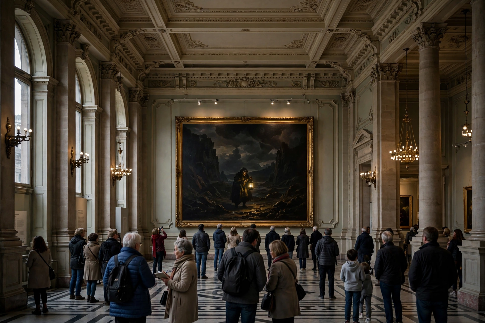

Wikipedia — The Free Encyclopedia

The Third of May 1808 in Madrid (Spanish: El tres de mayo de 1808 en Madrid), also known as The Executions, is a painting completed in 1814 by the Spanish artist Francisco Goya. It commemorates Spanish resistance to Napoleon's armies during the Peninsular War and is the companion piece to The Second of May 1808, which shows the uprising of the previous day. The work is in the Museo del Prado, Madrid.
On 2 May 1808 the people of Madrid rose against the French occupation; the revolt was crushed, and on the following night French troops executed hundreds of prisoners at sites around the city. Six years later, after the restoration of Ferdinand VII, Goya proposed to paint the heroic episodes of the uprising, producing the two canvases at government expense. They were not exhibited prominently for decades but eventually became the defining images of the war.
By night, on a hill outside the city, a firing squad seen from behind levels its muskets at a line of prisoners. A huge lantern throws harsh light on the central victim, a labourer in a white shirt and yellow breeches who throws out his arms in a gesture recalling Christ's crucifixion, stigmata-like marks visible on his palm. Others cover their faces, pray or stare in terror; corpses already lie in blood in the foreground. The faceless, mechanical soldiers and the terrified individuality of the victims invert the traditional heroic battle picture: the painting is often called the first truly modern image of war's atrocity, influencing Manet's Execution of Emperor Maximilian and Picasso's Massacre in Korea.